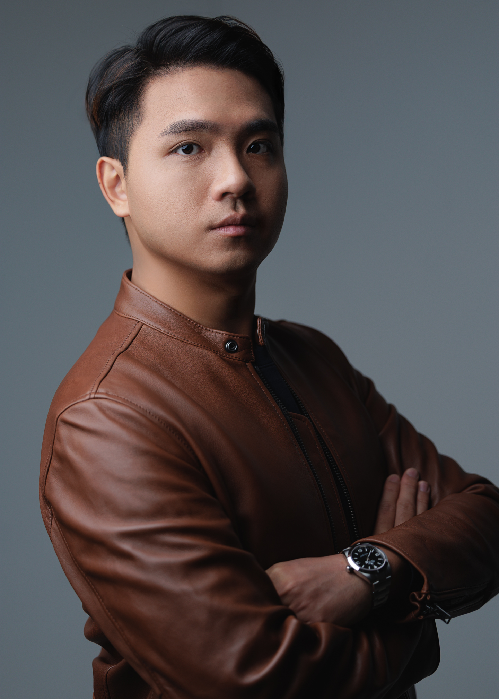

我們不只提供策略，也不只是代為執行。UPROOT 介乎兩者之間。We don’t just hand over recommendations, and we don’t just execute instructions. Uproot sits between strategy and execution.
我們與創辦人一起看清真正的問題，重新設計需要改變的部分，並把下一階段所需要的商業結構真正建立起來。We work with founders to see the real problem, redesign what needs to change, and actually build the commercial structure the next stage requires.
創辦人 Judas 有十二年銷售經驗，做過陌生拜訪、企業軟件、服務合約與續約，並曾建立、帶領及最終賣出自己的銷售組織。現於悉尼工作，服務澳洲及亞洲的客戶。Founder Judas has twelve years in sales — door-to-door, enterprise software, service contracts and renewals — and built, led and eventually sold a sales organization of his own. Based in Sydney, working with businesses in Australia and Asia.